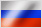

Ты оказался на тестовом сервере игры
«Танки Онлайн».
На нём работает тестовая группа и приглашённые ими игроки, у которых есть «Инвайт-код». Иногда, при необходимости проведения нагрузочных исследований, тестовый сервер открыт для всех.
На тестовом сервере количество кристаллов и текущий ранг могут отличаться от того, что есть на основном сервере. Всё, что ты заработаешь на тестовом сервере, никогда не попадёт на основной.
You are on the test server of
"Tanki Online".
It is available to a group of testers and players that were invited by them, all of which have "Invite Codes". Sometimes, when there is a need for mass testing, the server is open for everyone.
The amount of crystals and your current rank on the test server may differ from the ones that you have on the main server. Everything that you earn on the test server will never be added to your account on the main one.